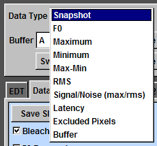
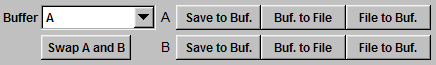
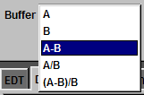

Data TypeEphic can display a snapshot (required for movie), F0 (baseline intensity), the maximum, the minimum, the difference between maximum and minimum (Max-Min), the RMS value, the signal to noise ratio (Signal/Noise (max/rms)), the latency, the excluded pixels, and the values in the buffer. To display one of these data properties, click "Data Type" and select. |
 |
BuffersEphic has two buffers to store data and do some arithmetic. For example, if you want to see the difference in the calcium imaging data before and after theta-burst pairing, you can go to the baseline record and save the maximum data to buffer B by click "Save to Buf." button in the B row. Then, go to the record after TBP and click "Save to Buf." button in the A row. Click "Buffer" and select "A-B". Last, click "Data Type" and select "Buffer" and you will see the difference is displayed in the imaging window. When "Buffer" is selected in "Data Type", you can display the values stored in buffer A (A), the values stored in buffer B (B), the difference between A and B (A-B), the values in A divided by those in B (A/B), or the values of (A-B)/B by clicking "Buffer" and make the respective choice. You can swap the values in buffer A and buffer B by clicking "Swap A and B". You can save values in the buffer to a file by clicking "Buf. to File". You can load values from a saved file to a buffer by clicking "File to Buf.". |
  |